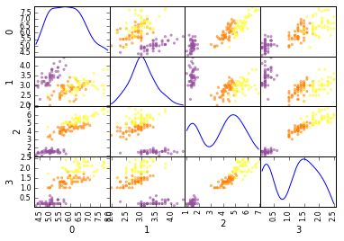
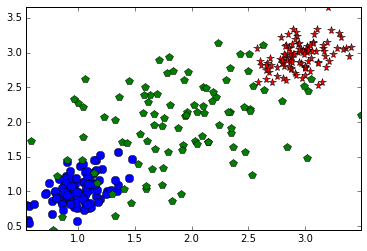
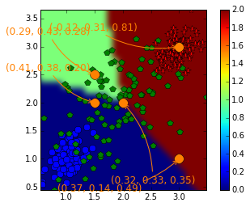
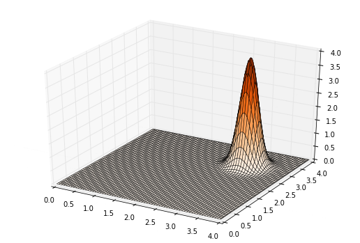
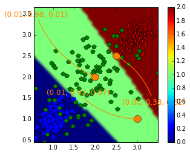
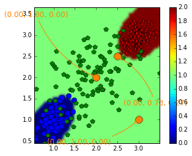
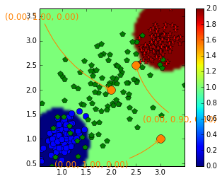
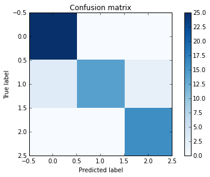
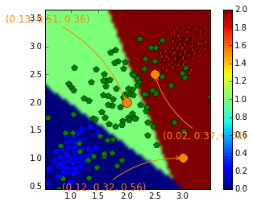

%matplotlib inline
# %matplotlib notebook
from sklearn.linear_model import LinearRegression
from sklearn.datasets import load_iris
import numpy as np
import pandas as pd
import matplotlib.pyplot as plt
# import sklearn
# print sklearn.__version__
np.random.seed(seed=42)Part I: Indicator functions and least square fitting for classification
#Load some real data and check some statistics
iris_dataset = load_iris()
X = pd.DataFrame(iris_dataset.data)
y = (iris_dataset.target)
classes = list(set(y))
print classes[0, 1, 2]palette = [(153. / 255, 79. / 255, 161. / 255),
(255. / 255, 129. / 255, 1. / 255),
(253. / 255, 252. / 255, 51. / 255)] # HEXA
color_map = dict(zip(classes, palette))
colors = [color_map[y[i]] for i in range(len(y))]
axeslist = pd.scatter_matrix(X, color=colors, diagonal='kde')
regr_0 = LinearRegression(fit_intercept=False) # change to True...
regr_1 = LinearRegression(fit_intercept=False)
regr_2 = LinearRegression(fit_intercept=False)
# Classes are 0, 1 and 2
indexes_0 = np.squeeze(np.argwhere(y == 0))
y_0 = np.zeros(y.shape,)
y_0[indexes_0] = 1
# print y_0
indexes_1 = np.squeeze(np.argwhere(y == 1))
y_1 = np.zeros(y.shape)
y_1[indexes_1] = 1
indexes_2 = np.squeeze(np.argwhere(y == 2))
y_2 = np.zeros(y.shape)
y_2[indexes_2] = 1
x_to_class = np.array([4.9, 3.1, 1.5, 0.1]).reshape(1, -1)
regr_0 = regr_0.fit(X, y_0)
p_0 = regr_0.predict(x_to_class)
regr_1 = regr_1.fit(X, y_1)
p_1 = regr_1.predict(x_to_class)
regr_2 = regr_2.fit(X, y_2)
p_2 = regr_2.predict(x_to_class)
# Probatilities by class:
prob_by_classes = [p_0[0], p_1[0], p_2[0]]
print prob_by_classes
# Note that it can weirdly be a negative value, i.e. you estimate a probability
# by a negative number
print 'The winner is class ' + \
str(np.argmax([p_0[0], p_1[0], p_2[0]])) + ', for x_to_class=' + str(x_to_class)
print "the sum of the weights is " + str(np.sum(prob_by_classes))[0.85044983065319102, 0.3086627803242139, -0.19879400826986127]
The winner is class 0, for x_to_class=[[ 4.9 3.1 1.5 0.1]]
the sum of the weights is 0.960318602708Exercise : compare with the constant variable removed from the fitting
# TODOExercise : write a function taking a data sets with label between 0 and K-1 implementing the method above
classi_ind_regr
input : x_to_class, X, y, K=3
output :label_pred, proba_vector
#TODO check np.argmax if needed# Solution is in module5_source.py if neededSimulated toy example:
n_samples = 100
X = np.zeros([3 * n_samples, 2])
mean_0 = [1, 1]
mean_1 = [2, 2]
mean_2 = [3, 3]
noise_level = 0.20
cov = noise_level * noise_level * np.array([[1, 0.5], [0.5, 1]])
X[0:n_samples, ] = np.random.multivariate_normal(mean_0, cov, n_samples)
X[n_samples: 2 * n_samples, ] = np.random.multivariate_normal(mean_1,
10 * cov, n_samples)
X[2 * n_samples:3 * n_samples, ] = np.random.multivariate_normal(mean_2, cov,
n_samples)
y = np.zeros(3 * n_samples,)
y[n_samples:2 * n_samples] = 1
y[2 * n_samples:3 * n_samples, ] = 2
mat = np.array([[1, 1], [1, 1]])
# valeur_propre, vecteur_propre = np.linalg.eig(mat)
# print valeur_proprefrom module5_source import (classi_ind_regr, plot_2d, frontiere)
fig1 = plt.figure()
plot_2d(X, y)
plt.show()
display_1 = np.array([2, 2])
display_2 = np.array([3, 1])
display_2bis = np.array([3, 3])
display_2ter = np.array([1.5, 2.5])
display_2quad = np.array([1.5, 2])
values_proba1 = classi_ind_regr(display_1, X, y, k=3)[1]
values_proba2 = classi_ind_regr(display_2, X, y, k=3)[1]
values_proba2bis = classi_ind_regr(display_2bis, X, y, k=3)[1]
values_proba2ter = classi_ind_regr(display_2ter, X, y, k=3)[1]
values_proba2quad = classi_ind_regr(display_2quad, X, y, k=3)[1]color_text = '#ff8101'
plt.figure()
plot_2d(X, y)
resolution_param = 50 # 500 for nice plotting, 50 for fast version
frontiere(lambda xx: classi_ind_regr(xx, X, y, k=3)[0], X,
step=resolution_param)
plt.annotate(r'' + '(%.2f' % values_proba1[0] + ', %.2f' % values_proba1[1] +
', %.2f)' % values_proba1[2],
xy=(display_1[0], display_1[1]), xycoords='data',
color =color_text, xytext=(-15, -99), textcoords='offset points',
fontsize=12, arrowprops=dict(arrowstyle="->",
connectionstyle="arc3,rad=.2", color=color_text))
plt.plot(display_1[0], display_1[1], 'o', color=color_text, markersize=12)
plt.annotate(r'' + '(%.2f' % values_proba2[0] + ', %.2f' % values_proba2[1] +
', %.2f)' % values_proba2[2], xy=(display_2[0], display_2[1]),
xycoords='data', color =color_text, xytext=(-150, -40),
textcoords='offset points', fontsize=12,
arrowprops=dict(arrowstyle="->",
connectionstyle="arc3,rad=.2", color=color_text))
plt.plot(display_2[0], display_2[1], 'o', color=color_text, markersize=12)
plt.annotate(r'' + '(%.2f' % values_proba2bis[0] + ', %.2f'
% values_proba2bis[1] + ', %.2f)' % values_proba2bis[2],
xy=(display_2bis[0], display_2bis[1]), xycoords='data',
color =color_text, xytext=(-160, 20), textcoords='offset points',
fontsize=12, arrowprops=dict(arrowstyle="->",
connectionstyle="arc3,rad=.2", color=color_text))
plt.plot(display_2bis[0], display_2bis[1], 'o',
color=color_text, markersize=12)
plt.annotate(r'' + '(%.2f' % values_proba2ter[0] + ', %.2f'
% values_proba2ter[1] + ', %.2f)' % values_proba2ter[2],
xy=(display_2ter[0], display_2ter[1]), xycoords='data',
color=color_text, xytext=(-110, 50), textcoords='offset points',
fontsize=12, arrowprops=dict(arrowstyle="->",
connectionstyle="arc3,rad=.2", color=color_text))
plt.plot(display_2ter[0], display_2ter[1], 'o', color=color_text,
markersize=12)
plt.annotate(r'' + '(%.2f' % values_proba2quad[0] + ', %.2f'
% values_proba2quad[1] + ', %.2f)' % values_proba2quad[2],
xy=(display_2quad[0], display_2quad[1]), xycoords='data',
color =color_text, xytext=(-110, 40), textcoords='offset points',
fontsize=12, arrowprops=dict(arrowstyle="->",
connectionstyle="arc3,rad=.2", color=color_text))
plt.plot(display_2quad[0], display_2quad[1], 'o',
color=color_text, markersize=12)
plt.draw()
plt.show()
Ploting the underlying distribution: mixture of Gaussian
step = 200
xx = np.linspace(0, 4, step)
yy = xx
Xg, Yg = np.meshgrid(xx, yy)
# Z1 = plt.mlab.bivariate_normal(Xg, Yg, sigmax=noise_level, sigmay=noise_level,
# mux=mean_0[0], muy=mean_0[1], sigmaxy=0.0)
# Z2 = plt.mlab.bivariate_normal(Xg, Yg, sigmax=noise_level, sigmay=noise_level,
# mux=mean_1[0], muy=mean_1[1], sigmaxy=0.0)
Z3 = plt.mlab.bivariate_normal(Xg, Yg, sigmax=noise_level, sigmay=noise_level,
mux=mean_2[0], muy=mean_2[1], sigmaxy=0.0)
print Z3
# fig3 = plt.figure(figsize=(9, 6), dpi = 90)
# ax = fig3.add_subplot(111, projection='3d')
# ax.plot_surface(Xg, Yg, (Z1 + Z2 + Z3) / 3, cmap='Oranges',
# rstride=3, cstride=3, alpha=0.9, linewidth=0.5)
# plt.show()
# Z2 = plt.mlab.bivariate_normal(Xg, Yg, sigmax=noise_level,
# sigmay=noise_level, mux=mean_1[0],
# muy=mean_1[1], sigmaxy=0.0)
# fig3_bis = plt.figure(figsize=(9, 6), dpi = 90)
# ax = fig3_bis.add_subplot(111, projection='3d')
# ax.plot_surface(Xg, Yg, Z2, cmap='Oranges', rstride=3, cstride=3,
# alpha=0.9, linewidth=0.5)
# ax.set_zlim(0, 4)
# plt.show()
# Z3 = plt.mlab.bivariate_normal(Xg, Yg, sigmax=noise_level,
# sigmay=2 * noise_level, mux=mean_1[0],
# muy=mean_1[1], sigmaxy=0.0)
fig3_ter = plt.figure(figsize=(9, 6), dpi = 90)
ax = fig3_ter.add_subplot(111, projection='3d')
ax.plot_surface(Xg, Yg, Z3, cmap='Oranges', rstride=3, cstride=3,
alpha=0.9, linewidth=0.5)
ax.set_zlim(0, 4)
plt.show()
# Z4 = plt.mlab.bivariate_normal(Xg, Yg, sigmax=noise_level,
# sigmay=noise_level * 2,
# mux=mean_2[0], muy=mean_2[1],
# sigmaxy=noise_level ** 2 / 2)
# fig3_quart = plt.figure(figsize=(9, 6), dpi = 90)
# ax = fig3_quart.add_subplot(111, projection='3d')
# ax.plot_surface(Xg, Yg, Z4, cmap='Oranges', rstride=3, cstride=3,
# alpha=0.9, linewidth=0.5)
# ax.set_zlim(0, 4)
plt.show()[[ 7.64718703e-98 3.43576665e-97 1.52812509e-96 ..., 5.50368240e-54
3.38060932e-54 2.05565345e-54]
[ 3.43576665e-97 1.54363852e-96 6.86563727e-96 ..., 2.47272211e-53
1.51885716e-53 9.23574324e-54]
[ 1.52812509e-96 6.86563727e-96 3.05362780e-95 ..., 1.09979201e-52
6.75541725e-53 4.10777925e-53]
...,
[ 5.50368240e-54 2.47272211e-53 1.09979201e-52 ..., 3.96100159e-10
2.43302537e-10 1.47945430e-10]
[ 3.38060932e-54 1.51885716e-53 6.75541725e-53 ..., 2.43302537e-10
1.49447363e-10 9.08747386e-11]
[ 2.05565345e-54 9.23574324e-54 4.10777925e-53 ..., 1.47945430e-10
9.08747386e-11 5.52583729e-11]]
Exo : Investigate the influence of noise_level on the previous method
# TODOPart II : Linear Discriminant Analysis (LDA)
from sklearn.discriminant_analysis import LinearDiscriminantAnalysis
clf = LinearDiscriminantAnalysis()
clf.fit(X, y)
print clf.coef_
display_3 = np.array([2.5, 2.5])
values_proba_lda_1 = clf.predict_proba(display_1.reshape(1, -1))[0]
values_proba_lda_2 = np.exp(clf.predict_log_proba(display_2.reshape(1, -1)))[0]
values_proba_lda_3 = np.exp(clf.predict_log_proba(display_3.reshape(1, -1)))[0]
print values_proba_lda_1[[-5.23109277 -4.51476179]
[-0.49471781 0.11337038]
[ 5.72581058 4.40139141]]
[ 0.00914674 0.97794032 0.01291295]fig2 = plt.figure()
plot_2d(X, y)
resolution_param = 100 # 500 for nice plotting, 50 for fast version
frontiere(lambda xx: clf.predict(xx.reshape(1, -1)), X, step=resolution_param)
plt.annotate(r'' + '(%.2f' % values_proba_lda_1[0] + ', %.2f'
% values_proba_lda_1[1] + ', %.2f)' % values_proba_lda_1[2],
xy=(display_1[0], display_1[1]), xycoords='data',
color =color_text, xytext=(-150, 100), textcoords='offset points',
fontsize=12, arrowprops=dict(arrowstyle="->",
connectionstyle="arc3,rad=.2", color=color_text))
plt.plot(display_1[0], display_1[1], 'o', color=color_text, markersize=12)
plt.annotate(r'' + '(%.2f' % values_proba_lda_2[0] + ', %.2f'
% values_proba_lda_2[1] + ', %.2f)' % values_proba_lda_2[2],
xy=(display_2[0], display_2[1]), xycoords='data',
color =color_text, xytext=(-150, 40), textcoords='offset points',
fontsize=12, arrowprops=dict(arrowstyle="->",
connectionstyle="arc3,rad=.2", color=color_text))
plt.plot(display_2[0], display_2[1], 'o', color=color_text, markersize=12)
plt.annotate(r'' + '(%.2f' % values_proba_lda_3[0] + ', %.2f'
% values_proba_lda_3[1] + ', %.2f)' % values_proba_lda_3[2],
xy=(display_3[0], display_3[1]), xycoords='data',
color =color_text, xytext=(10, -80), textcoords='offset points',
fontsize=12, arrowprops=dict(arrowstyle="->",
connectionstyle="arc3,rad=.2", color=color_text))
plt.plot(display_3[0], display_3[1], 'o', color=color_text, markersize=12)
plt.show()
Part III : Quadratic Discriminant Analysis (QDA)
from sklearn.discriminant_analysis import QuadraticDiscriminantAnalysis
clf = QuadraticDiscriminantAnalysis()
clf.fit(X, y)
display_3 = np.array([2.5, 2.5])
values_proba_qda_1 = (clf.predict_proba(display_1.reshape(1, -1)))[0]
values_proba_qda_2 = (clf.predict_proba(display_2.reshape(1, -1)))[0]
values_proba_qda_3 = (clf.predict_proba(display_3.reshape(1, -1)))[0]
fig3 = plt.figure()
plot_2d(X, y)
frontiere(lambda xx: clf.predict(xx.reshape(1, -1)), X, step=resolution_param)
plt.annotate(r'' + '(%.2f' % values_proba_qda_1[0] + ', %.2f'
% values_proba_qda_1[1] + ', %.2f)' % values_proba_qda_1[2],
xy=(display_1[0], display_1[1]), xycoords='data',
color=color_text, xytext=(-150, +100), textcoords='offset points',
fontsize=12, arrowprops=dict(arrowstyle="->",
connectionstyle="arc3,rad=.2", color=color_text))
plt.plot(display_1[0], display_1[1], 'o', color=color_text, markersize=12)
plt.annotate(r'' + '(%.2f' % values_proba_qda_2[0] + ', %.2f'
% values_proba_qda_2[1] + ', %.2f)' % values_proba_qda_2[2],
xy=(display_2[0], display_2[1]), xycoords='data',
color =color_text, xytext=(-150, -40), textcoords='offset points',
fontsize=12, arrowprops=dict(arrowstyle="->",
connectionstyle="arc3,rad=.2", color=color_text))
plt.plot(display_2[0], display_2[1], 'o', color=color_text, markersize=12)
plt.annotate(r'' + '(%.2f' % values_proba_qda_3[0] + ', %.2f'
% values_proba_qda_3[1] + ', %.2f)' % values_proba_qda_3[2],
xy=(display_3[0], display_3[1]), xycoords='data',
color =color_text, xytext=(10, -80), textcoords='offset points',
fontsize=12, arrowprops=dict(arrowstyle="->",
connectionstyle="arc3,rad=.2", color=color_text))
plt.plot(display_3[0], display_3[1], 'o', color=color_text, markersize=12)
plt.show()
EXERCICE: Test QDA vs LDA for the IRIS dataset, using training/testing set with ratio 80%/20%.
# Hint: consider the train_test_split in sklearn
# cross_validation.train_test_splitPart IV: Gaussian Naive Bayes
from sklearn.naive_bayes import GaussianNB
clf = GaussianNB()
clf.fit(X, y)
display_3 = np.array([2.5, 2.5])
values_proba_gnb_1 = (clf.predict_proba(display_1.reshape(1, -1)))[0]
values_proba_gnb_2 = (clf.predict_proba(display_2.reshape(1, -1)))[0]
values_proba_gnb_3 = (clf.predict_proba(display_3.reshape(1, -1)))[0]
fig1_bis = plt.figure()
plot_2d(X, y)
frontiere(lambda xx: clf.predict(xx.reshape(1, -1)), X, step=resolution_param)
plt.annotate(r'' + '(%.2f' % values_proba_gnb_1[0] + ', %.2f'
% values_proba_gnb_1[1] + ', %.2f)' % values_proba_gnb_1[2],
xy=(display_1[0], display_1[1]), xycoords='data',
color =color_text, xytext=(-150, +100),
textcoords='offset points', fontsize=12,
arrowprops=dict(arrowstyle="->", connectionstyle="arc3,rad=.2",
color=color_text))
plt.plot(display_1[0], display_1[1], 'o', color=color_text, markersize=12)
plt.annotate(r'' + '(%.2f' % values_proba_gnb_2[0] + ', %.2f'
% values_proba_gnb_2[1] + ', %.2f)' % values_proba_gnb_2[2],
xy=(display_2[0], display_2[1]), xycoords='data',
color =color_text, xytext=(-150, -40),
textcoords='offset points', fontsize=12,
arrowprops=dict(arrowstyle="->", connectionstyle="arc3,rad=.2",
color=color_text))
plt.plot(display_2[0], display_2[1], 'o', color=color_text, markersize=12)
plt.annotate(r'' + '(%.2f' % values_proba_gnb_3[0] + ', %.2f'
% values_proba_gnb_3[1] + ', %.2f)' % values_proba_gnb_3[2],
xy=(display_3[0], display_3[1]), xycoords='data',
color =color_text, xytext=(10, -80), textcoords='offset points',
fontsize=12,
arrowprops=dict(arrowstyle="->", connectionstyle="arc3,rad=-.2",
color=color_text))
plt.plot(display_3[0], display_3[1], 'o', color=color_text, markersize=12)
plt.show()
Exo : compute the confusion matrix for this method
# Hint: sklearn has it
from sklearn.cross_validation import train_test_split
from sklearn.metrics import confusion_matrix
X_train, X_test, y_train, y_test = train_test_split(X, y, test_size=0.2)
#clf=...
clf.fit(X_train, y_train)
cm = confusion_matrix(y_test, clf.predict(X_test))
def plot_confusion_matrix(cm, title='Confusion matrix', cmap=plt.cm.Blues):
plt.imshow(cm, interpolation='nearest', cmap=cmap)
plt.title(title)
plt.colorbar()
plt.tight_layout()
plt.ylabel('True label')
plt.xlabel('Predicted label')
plot_confusion_matrix(cm)
print cm/home/jo/Documents/Mes_papiers/Fercoq/scikit-learn-private/sklearn/cross_validation.py:44: DeprecationWarning: This module was deprecated in version 0.18 in favor of the model_selection module into which all the refactored classes and functions are moved. Also note that the interface of the new CV iterators are different from that of this module. This module will be removed in 0.20.
"This module will be removed in 0.20.", DeprecationWarning)[[25 0 0]
[ 3 14 2]
[ 0 0 16]]
Part IV : Logistic regression
from sklearn.linear_model import LogisticRegression
clf = LogisticRegression()
clf.fit(X, y)
display_3 = np.array([2.5, 2.5])
values_proba_logi_1 = (clf.predict_proba(display_1.reshape(1, -1)))[0]
values_proba_logi_2 = (clf.predict_proba(display_2.reshape(1, -1)))[0]
values_proba_logi_3 = (clf.predict_proba(display_3.reshape(1, -1)))[0]
fig4 = plt.figure()
plot_2d(X, y)
frontiere(lambda xx: clf.predict(xx.reshape(1, -1)), X, step=resolution_param)
plt.annotate(r'' + '(%.2f' % values_proba_logi_1[0] + ', %.2f'
% values_proba_logi_1[1] + ', %.2f)' % values_proba_logi_1[2],
xy=(display_1[0], display_1[1]), xycoords='data',
color =color_text, xytext=(-150, +100),
textcoords='offset points', fontsize=12,
arrowprops=dict(arrowstyle="->", connectionstyle="arc3,rad=-.2",
color=color_text))
plt.plot(display_1[0], display_1[1], 'o', color=color_text, markersize=12)
plt.annotate(r'' + '(%.2f' % values_proba_logi_2[0] + ', %.2f'
% values_proba_logi_2[1] + ', %.2f)' % values_proba_logi_2[2],
xy=(display_2[0], display_2[1]), xycoords='data',
color =color_text, xytext=(-150, -40), textcoords='offset points',
fontsize=12,
arrowprops=dict(arrowstyle="->", connectionstyle="arc3,rad=-.2",
color=color_text))
plt.plot(display_2[0], display_2[1], 'o', color=color_text, markersize=12)
plt.annotate(r'' + '(%.2f' % values_proba_logi_3[0] + ', %.2f'
% values_proba_logi_3[1] + ', %.2f)' % values_proba_logi_3[2],
xy=(display_3[0], display_3[1]), xycoords='data',
color =color_text, xytext=(10, -80), textcoords='offset points',
fontsize=12,
arrowprops=dict(arrowstyle="->", connectionstyle="arc3,rad=-.2",
color=color_text))
plt.plot(display_3[0], display_3[1], 'o', color=color_text, markersize=12)
plt.show()
Exercise: Are LogisticRegression and LDA the same on this example?
Exercise (bonus): investigate http://nbviewer.ipython.org/github/cs109/content/blob/master/labs/lab4/Lab4full.ipynb (Part 2)
What do you think is the C parameter?
Determine its influence, by changing its value
PART V: K-Nearest Neighboors (KNN)
from sklearn.neighbors import KNeighborsClassifier
clf = KNeighborsClassifier()
clf.fit(X, y)
# KNeighborsClassifier?
display_3 = np.array([2.5, 2.5])
fig5 = plt.figure()
plot_2d(X, y)
frontiere(lambda xx: clf.predict(xx.reshape(1,-1)), X, step=resolution_param)
plt.show()
# BEWARE: now it's not that easy to get the probability estimates